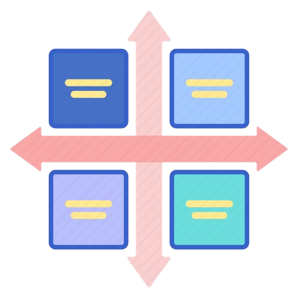

Task Manager
Sign In
Get Started
Stay Organized, Stay Creative
Create reminders and repetition for tasks
Organize schedule with Calendar view

Use Eisenhower Matrix to prioritize tasks
Improve focus with Pomo
Check-in to cultivate good habits
Get Started